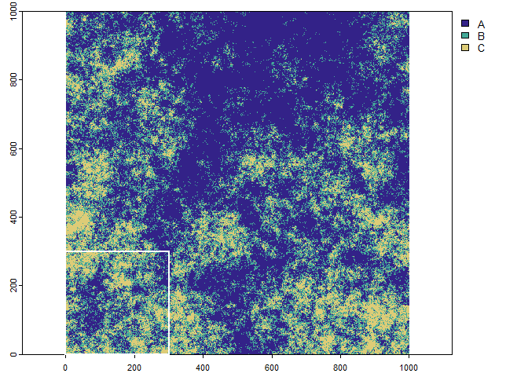
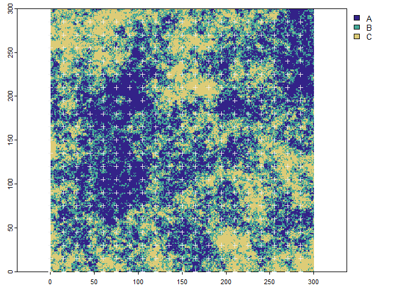
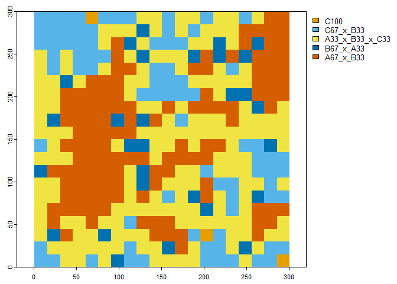
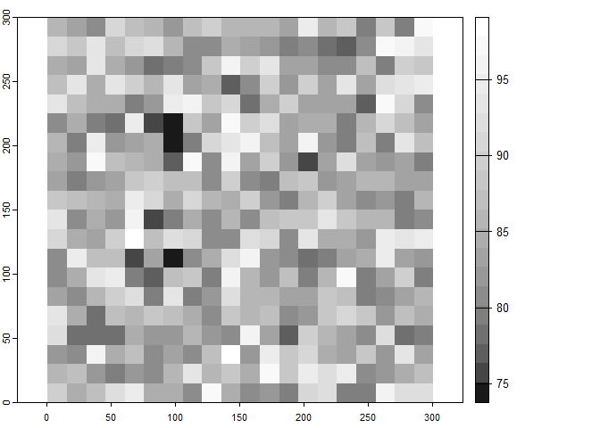

The purpose of the “landscapeScaling” package is to provide methods and functions to upscale categorical raster data. The recommended method is the multi-dimensional grid-point (mdgp) scaling algorithm. It generates a new classification scheme on the basis of user desired class label precision of mixed classes and representativeness of the scaled class across the landscape of interest. The scaling output includes scaled categorical raster maps with mixed classes, a corresponding continuous raster with information retention calculations for each scaled grid cell and class-specific and landscape-scale information retention mean and standard deviation. The alternative method available in the package that does not modify the classification scheme is the majority (plurality) rule.
Installation
You can install the development version of landscapeScaling from GitHub with:
# install.packages("devtools")
devtools::install_github("gannd/landscapeScaling")
library(landscapeScaling)
library(terra)
#> terra 1.6.17Example
For demonstration purpose we will load a package provided landscape with three classes and first subset the original raster to the lower left chunk of 90,000 grid cells (300 by 300 cells).
# three class color scheme
clr <- c('#332288','#44AA99','#DDCC77')
# scaled color scheme
clr_scale <- c('#E69F00','#56B4E9','#009E73','#F0E442','#0072B2','#D55E00')
# load categorical raster data set and plot
r <- terra::rast(system.file("extdata/nlm_mid_geom_r3_sa0.tif", package = "landscapeScaling"))
terra::plot(r, col=clr,mar=c(1.5,1.5,0.75,5))
# generate subset extent to the lower left 300 by 300 cells (demo purpose) and add to plot
sub_ext <- terra::ext(0,300,0,300)
terra::plot(sub_ext, border='white',lwd=2,add=TRUE)
The original raster with three classes and the subset extent in the lower left corner (outline in white).
# subset the landscape and plot
r_sub <- terra::crop(r,sub_ext)
terra::plot(r_sub,col=clr,mar=c(1.5,1.5,0.75,5))The subset of the categorical raster.
Scaling Process Steps
- Generate the scaled grid with the “scale_grid” function applying a scale factor of 15. First the lower left corner of the 15 by 15 grid cells will be generated.
LL_pnts <- scale_grid(r_sub,scale_factor=15)
head(LL_pnts)
#> x y
#> 1 0 0
#> 2 15 0
#> 3 30 0
#> 4 45 0
#> 5 60 0
#> 6 75 0
terra::plot(r_sub,col=clr,mar=c(1.5,1.5,0.75,5))
terra::plot(vect(LL_pnts,geom=c("x","y")),pch=3,col='#EEEEEE',add=TRUE)
The subset of the categorical raster and the scaled grid cell origin (lower left corners)
- Generate relative abundance for the subset for a scale factor of 15. First the lower left corner of the 15 by 15 grid cells will be generated. The relative abundance for each of the 400 scaled grid cells and the relative abundances are returned as a data frame.
rel_abund <- relative_abundance_scaled_grid(r_sub,class_field='cover',scale_factor=15)
head(rel_abund)
#> x y A B C
#> 1 0 0 4.8888889 38.22222 56.88889
#> 2 15 0 10.2222222 38.66667 51.11111
#> 3 30 0 20.0000000 42.66667 37.33333
#> 4 45 0 24.8888889 40.44444 34.66667
#> 5 60 0 0.8888889 28.00000 71.11111
#> 6 75 0 17.7777778 37.33333 44.88889- Classify the relative abundance of each scaled grid cell to a list of multi-dimensional grid points that are generated from the class label precision parameter parts and the landscape richness (number of classes). The mdgp_scale” function requires the argument parts for the class label precision, the representativeness threshold prp − threshold, and the monotypic class threshold monotypic − threshold. First multi-dimensional grid points are gnerated, then each grid cell is classified to the grid point that maximizes information retention.
# classify relative abundance samples to multidimensional grid points with a 33.3% class label precision and a 10 percent representativeness threshold and a monotypic class threshold of 90%
mdgp_result <- mdgp_scale(rel_abund,parts=3,rpr_threshold=10,monotypic_threshold=90)
#> [1] "number of cells: 400"
#> [1] "number of grid points: 10"
#> [1] "number of grid points remaining: 5"
head(mdgp_result)
#> cls A B C x_y prc_inf_agr class_name
#> 1 10 0.000 8.444 91.556 285_0 91.556 C100
#> 2 10 0.000 9.333 90.667 195_30 90.667 C100
#> 3 10 0.444 12.444 87.111 60_285 87.111 C100
#> 4 9 4.889 38.222 56.889 0_0 90.222 C67_x_B33
#> 5 9 10.222 38.667 51.111 15_0 84.444 C67_x_B33
#> 6 9 10.667 42.667 46.667 225_0 80.000 C67_x_B33- Convert classified points to raster and location-specific information retention and summarize information retention at the class-level and across the scaled landscape with the function scaling_result_to_raster().
# convert classified points and location-specific information retention to raster
mdgp_raster <- scaling_result_to_raster(mdgp_result,class_name_field='class_name',scale_factor=15)
# plot the scaled map
terra::plot(mdgp_raster[[1]],col=clr_scale,mar=c(1.5,1.5,1,8))
The scaled categorical raster with scaled classification scheme.
# plot information retention of the scaled map
terra::plot(mdgp_raster[[2]],col=gray.colors(20,start=0.1,end=1),mar=c(1.5,1,1,8))
Information retention raster at the scaled grid cell level.
# print the class-specific and landscape scale summary statistics
print(mdgp_raster[[3]])
#> [[1]]
#> class_name freq class_id prop inf_retention_mn inf_retention_sd
#> 1 A33_x_B33_x_C33 165 1 0.4125 84.129 3.814
#> 2 A67_x_B33 122 2 0.3050 87.417 6.519
#> 3 B67_x_A33 29 3 0.0725 82.038 2.214
#> 4 C100 3 4 0.0075 89.778 2.352
#> 5 C67_x_B33 81 5 0.2025 88.093 5.132
#>
#> [[2]]
#> mean sd
#> information_retention_landscape 85.826 5.356